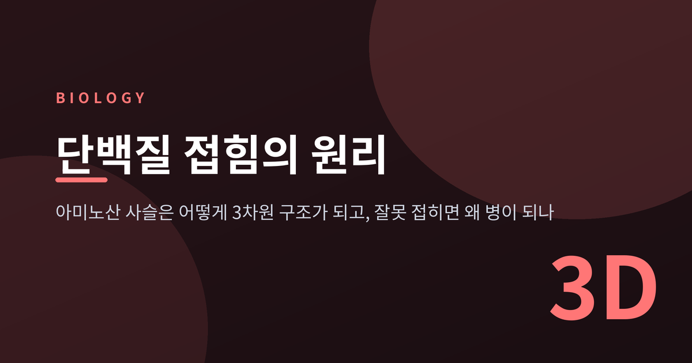
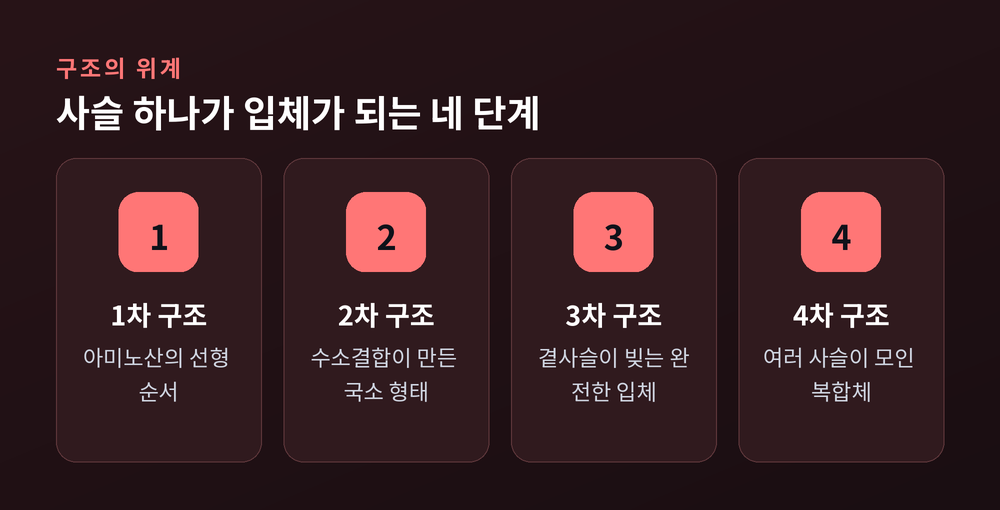
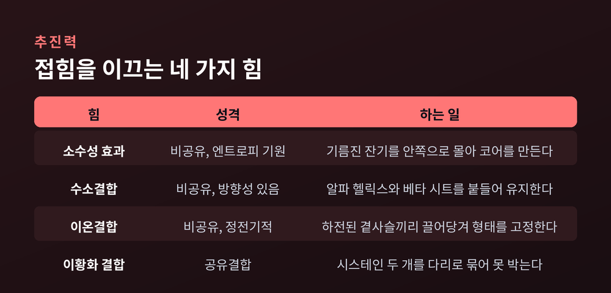
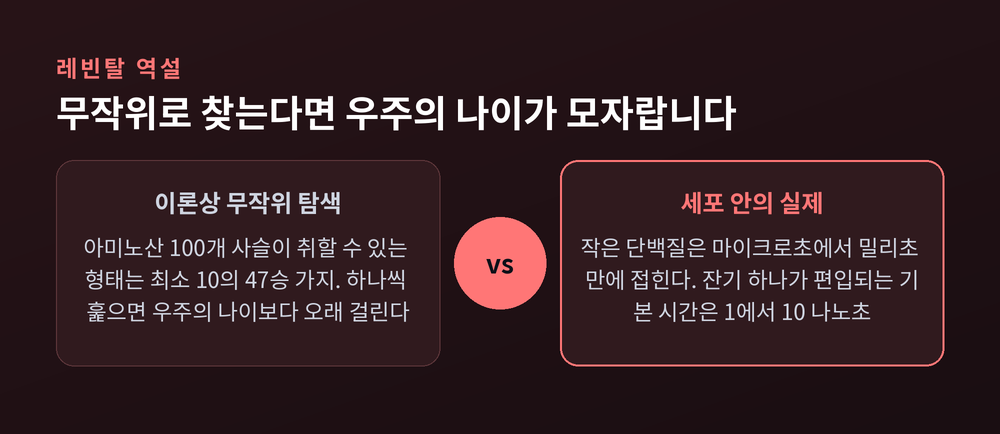
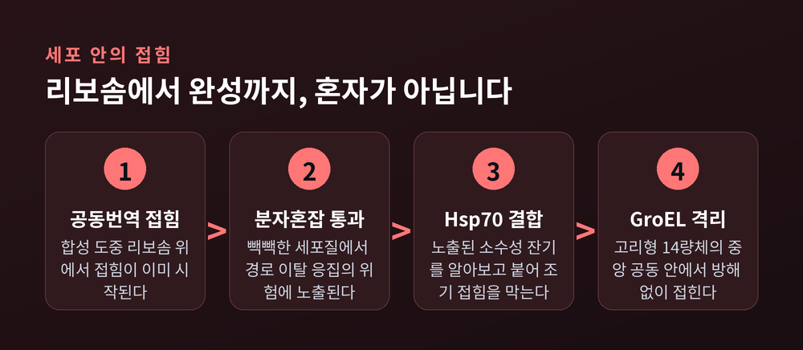
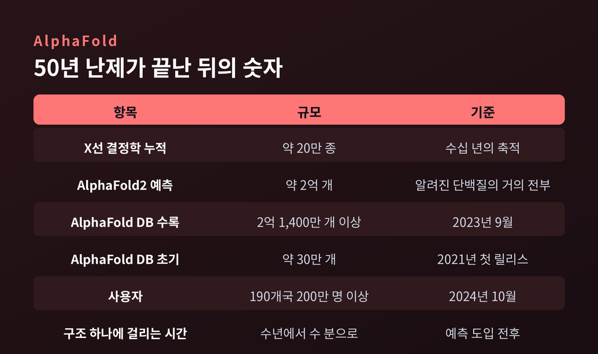

이번 글에서는 아미노산이 일렬로 이어진 사슬 하나가 어떻게 정교한 3차원 구조가 되는지 정리해 보겠습니다. 접힘을 이끄는 물리적 힘부터 세포 안에서 벌어지는 실제 과정, 잘못 접혔을 때 생기는 질병, 그리고 AlphaFold가 바꿔놓은 풍경까지 순서대로 살펴보겠습니다.
먼저 결론부터 적겠습니다. 단백질 접힘은 설계도를 따라 조립되는 과정이 아닙니다. 물을 피하려는 성질에 떠밀려 저절로 굴러떨어지는 과정입니다. 그리고 이 굴러떨어짐이 어긋나는 순간, 우리 몸에서 가장 다루기 어려운 질병들이 시작됩니다.
단백질은 보통 20종의 아미노산으로 만들어집니다. 이 스무 가지가 사실상 무한한 방식으로 조합되고, 길이는 수십 개에서 수천 개까지 벌어집니다.
구조는 네 층으로 나뉩니다.

1차 구조는 아미노산 잔기가 늘어선 선형 순서입니다. 잔기들은 펩타이드 결합으로 이어집니다. 여기까지는 그저 긴 끈입니다.
2차 구조는 백본끼리의 수소결합으로 생기는 국소적 모양입니다. 나선으로 감기면 알파 헬릭스, 나란히 붙어 병풍처럼 펴지면 베타 시트가 됩니다.
3차 구조는 사슬 하나가 최종적으로 갖는 완전한 3차원 형태입니다. 이 단계를 이끄는 것은 곁사슬, 즉 R기들 사이의 상호작용입니다.
4차 구조는 둘 이상의 사슬이 모여 하나의 복합체를 이룬 상태를 말합니다.
주목할 지점은 3차 구조입니다. 단백질이 "일한다"고 할 때 그 일을 하는 것은 결국 3차원 형태이고, 그 형태가 무너지면 기능도 함께 사라집니다.
무엇이 사슬을 접히게 만드는가. 답은 단순합니다. 물입니다.
지용성 아미노산은 물과 닿기 싫어 단백질 안쪽으로 파고듭니다. 반대로 친수성 아미노산은 물과 닿는 바깥쪽으로 나옵니다. 물에 노출되는 소수성 곁사슬의 수를 최소화하려는 이 경향이 접힘의 중요한 추진력입니다.

네 가지 힘이 함께 작동합니다.
| 힘 | 성격 | 하는 일 |
|---|---|---|
| 소수성 효과 | 비공유, 엔트로피 기원 | 소수성 잔기를 안쪽으로 몰아 코어를 만든다 |
| 수소결합 | 비공유, 방향성 있음 | 알파 헬릭스와 베타 시트를 유지한다 |
| 이온결합(염다리) | 비공유, 정전기적 | 하전된 곁사슬끼리 붙들어 형태를 고정한다 |
| 이황화 결합 | 공유결합 | 시스테인 두 개를 다리로 묶어 구조를 못 박는다 |
이 중 이황화 결합만 성격이 다릅니다. 나머지 셋이 서로 끌어당기는 정도의 약한 힘이라면, 이황화 결합은 이웃한 시스테인 잔기 사이에 실제로 걸리는 공유결합입니다. 리벳을 박는 쪽에 가깝습니다.
다만 "무엇이 제1 추진력인가"에 대해서는 이견이 있습니다. 소수성 효과를 주된 힘으로 보는 견해가 널리 받아들여지지만, 수소결합이 새로 접히는 단백질의 1차 추진력이라고 보는 연구도 있습니다. 아직 한쪽으로 정리되지 않은 문제입니다.
접힘 연구의 출발점은 한 실험입니다.
Christian Anfinsen과 동료들은 리보뉴클레아제 A를 골랐습니다. 요소로 변성시키고, 이황화 결합까지 환원시켜 완전히 풀어헤쳤습니다. 그리고 희석한 뒤 공기 중에서 산화시켰습니다.
단백질은 촉매 활성을 거의 전부 회복했습니다.
노벨위원회는 이 장면을 이렇게 요약했습니다. 안핀슨은 화학적 방법으로 단백질을 펼쳤다가 다시 접히게 만들었고, 흥미로운 관찰은 "단백질이 매번 정확히 같은 모양을 취했다"는 점이었다고 말입니다.
1961년, 그는 단백질의 3차원 구조가 전적으로 아미노산 서열에 의해 결정된다고 결론지었습니다. 접힘에 별도의 유전 정보는 필요하지 않다는 뜻입니다. 이 결론이 안핀슨의 도그마, 또는 열역학 가설이라 불립니다. 천연 구조는 운동학적으로 도달 가능한 유일한 자유에너지 최소점이라는 것입니다.
여기서 하나의 사슬이 완성됩니다. 유전자가 서열을 정하고, 서열이 구조를 정하고, 구조가 기능을 정합니다.
이 발견으로 안핀슨은 1972년 노벨화학상의 절반을 받았습니다.
그런데 안핀슨의 논리에는 곧바로 반박이 따라붙었습니다. 1969년 Cyrus Levinthal이 제기한 것입니다.

계산은 잔인할 만큼 간단합니다. 아미노산 100개짜리 작은 단백질을 가정합니다. 노벨위원회의 서술에 따르면 이 사슬이 취할 수 있는 3차원 구조는 이론상 최소 10의 47승 가지입니다. 무작위로 접힌다면 올바른 구조를 찾는 데 우주의 나이보다 오랜 시간이 걸립니다.
세포 안에서는 몇 밀리초면 끝나는 일입니다.
경우의 수를 얼마로 잡느냐는 소스마다 다릅니다. 물리학 쪽 계산에서는 잔기당 최소 두 가지 형태만 가정해 2의 100승 가지를 제시하고, 사슬이 피코초마다 형태를 바꾼다 해도 다 훑는 데 약 100억 년이 걸린다고 봅니다. 레빈탈 본인은 잔기당 100가지를 가정했습니다. 실측으로는 잔기당 평균 열 가지 정도입니다.
숫자는 달라도 결론은 같습니다. 무작위 탐색으로는 절대 불가능합니다.
그래서 레빈탈은 안핀슨과 반대편에 섰습니다. 천연 구조가 전역 최소점일 필요는 없고, 접힘은 진화가 만든 빠른 특별 경로를 따르며, 천연 구조는 그 경로의 끝일 뿐이라고 본 것입니다.
오늘날 교과서가 즐겨 쓰는 해답은 폴딩 퍼널(folding funnel)입니다.
에너지 지형이 평평한 골프장이 아니라 깔때기 모양이라고 생각하는 그림입니다. 사슬은 어디에서 출발하든 열역학적으로 계속 아래로 떠밀립니다. 아래로 향하는 무작위 요동이 위나 옆으로 향하는 요동보다 조금 더 유리하니, 굳이 모든 경우를 세어볼 필요가 없습니다.
시간 척도가 이 그림을 뒷받침합니다. 잔기 하나가 자라나는 2차 구조에 편입되는 기본 시간은 1~10 나노초 수준으로 측정됩니다. 장벽이 없다면 100잔기 사슬은 1 마이크로초면 접힙니다. 실제로 작은 단백질 대부분은 밀리초, 때로는 마이크로초 단위로 자발적으로 접힙니다.
핵형성 기반 물리 이론은 탐색 시간을 천문학적 연수에서 밀리초에서 수 시간 범위로 끌어내렸습니다. 이 범위는 실험값과 잘 맞습니다. 80~100잔기보다 짧은 단백질은 구조가 어떻든 충분히 빨리 접히므로, 레빈탈 역설은 이 크기 영역에서는 해결된 셈입니다.
여기서 균형을 위해 한 가지를 덧붙이겠습니다. 퍼널 그림만으로는 부족하다는 반론이 있습니다. 한 물리 이론 논문은 아예 "폴딩 퍼널 그 자체는 레빈탈 역설을 풀지 못한다"는 절 제목을 달았습니다. 퍼널은 중요한 특징을 포착했지만 해답은 핵형성-응축 기전, 즉 접힘 도중 미접힘 상과 천연 유사 상이 분리되는 현상에 있다는 주장입니다. 이론 추정치와 관측 접힘 시간의 상관도 로그 기준 69% 수준에 머무릅니다.
한 가지 더 기억해 둘 사실이 있습니다. 생리 조건에서도 천연 상태는 변성 상태보다 겨우 몇 kcal/mol 더 안정할 뿐입니다. 단백질이라는 구조물은 생각보다 아슬아슬하게 서 있습니다.
안핀슨의 실험은 시험관 안에서 이루어졌습니다. 세포 안의 사정은 꽤 다릅니다.
가장 큰 차이는 접힘이 합성이 끝난 뒤 시작되지 않는다는 점입니다. 생체 내 접힘은 리보솜 위에서 사슬이 만들어지는 도중에 시작됩니다. 이를 공동번역 접힘이라 부릅니다. 리보솜에서 먼저 빠져나온 부위가 먼저 구조를 잡고, 나중에 나온 부위가 뒤이어 자리를 찾습니다.
효과가 작지 않습니다. 공동번역 접힘은 대장균 프로테옴의 최대 30%에 영향을 줄 수 있고, 오접힘이 잘 되는 단백질이 깊은 운동학적 함정을 우회하도록 돕는 것으로 보고됩니다.
두 번째 차이는 분자혼잡입니다. 세포질은 단백질과 핵산으로 빽빽합니다. 여기서 접히는 사슬은 경로를 벗어난 응집이라는 위험에 상시 노출됩니다.

그래서 세포는 도우미를 붙입니다. 분자 샤페론입니다.
샤페론은 비천연 상태의 단백질을 주로 노출된 소수성 잔기로 알아봅니다. 안쪽에 있어야 할 기름진 면이 밖으로 나와 있으면 뭔가 잘못되었다는 신호입니다. 이 판별 기준 하나가 세포 품질관리의 출발점입니다.
Hsp70은 리보솜 위 신생 사슬에 직접 붙습니다. 대장균에서는 DnaK라 부릅니다. 조기 접힘과 오접힘, 응집을 막는 역할입니다. N말단 뉴클레오타이드 결합 도메인과 기질 결합 도메인으로 이루어져 있고, ATP에 따라 구조를 바꾸는 순환을 돌립니다.
GroEL은 접근이 다릅니다. 고리 모양의 커다란 올리고머로, 대장균의 것은 보통 14량체입니다. 중앙에 뚫린 공동 안에 비천연 구조를 가둬 놓고 접히게 합니다. 붐비는 세포질에서 잠시 격리된 개인실을 내주는 셈입니다.
샤페론이 정확히 무엇을 하는지는 아직 논쟁 중입니다. 단순히 붙들어 응집만 막을 뿐 접힘 자체에는 관여하지 않는다는 견해가 있고, ATP를 써서 접힘 반응을 능동적으로 가속한다는 견해도 있습니다. 에너지 지형을 재조형한다는 연구까지 나와 있습니다.
접힘이 어긋나면 사슬은 그냥 쓸모없어지는 데서 멈추지 않습니다. 훨씬 나쁜 일이 벌어집니다.
경로는 이렇습니다. 오접힌 단량체가 이량체를 만들고, 이량체가 올리고머가 되고, 결국 불용성 섬유상 침착물이 됩니다. 이 구조는 베타 가닥들이 베타 시트 안에서 서로 맞물려 단단히 안정화됩니다.
문제는 여기서 시작됩니다. 이렇게 만들어진 응집체는 프리온과 유사한 시딩 기전으로 자기증식할 수 있습니다. 잘못 접힌 형태가 옆에 있는 정상 단백질을 같은 형태로 끌어들이고, 그렇게 만들어진 것이 다시 씨앗이 됩니다. 아밀로이드-β, 타우, 알파-시누클레인 같은 단백질에서 생긴 입자는 한 세포에서 다른 세포로 옮겨갈 수 있고, 이것이 신경퇴행성 질환에서 병리가 넓게 퍼지는 이유로 지목됩니다.
질환마다 무대는 다릅니다.
응집을 부추기는 요인으로는 유전적 소인, 번역후 변형, 산화 스트레스, 그리고 유비퀴틴-프로테아좀계와 자가포식을 포함한 품질관리 체계의 손상이 지목됩니다.
한 가지는 신중하게 적어 두겠습니다. 알츠하이머나 파킨슨 관련 단백질 입자가 실제로 사람 사이에 전염될 수 있는지는 아직 연구 중인 쟁점입니다. 이를 다룬 논문 제목조차 의문형으로 달려 있습니다. 단정할 단계가 아닙니다.
응집만 문제가 아닙니다. 제대로 접히지 못해 세포가 스스로 버려버리는 경우도 있습니다.
낭포성 섬유증에서 가장 흔한 변이인 F508del(ΔF508)이 그렇습니다.
이 변이는 CFTR 단백질의 첫 번째 뉴클레오타이드 결합 도메인, 즉 NBD1의 접힘을 망가뜨립니다. 손상은 NBD1에서 시작되지만 이 도메인이 다른 도메인들과 맞물려 있기 때문에, 결국 CFTR 전체의 구조가 흐트러집니다.
그다음이 결정적입니다. 세포의 품질관리 체계는 이 단백질을 오접힘으로 인식하고 분해 표식을 붙입니다. 신생 CFTR은 ERAD로 분류되어, 소포체를 떠나기도 전에 유비퀴틴-프로테아좀계에 의해 분해됩니다.
기능이 조금 떨어지는 정도가 아닙니다. 아예 일터에 도착하지 못하는 것입니다.
그래서 치료 전략도 방향이 바뀌었습니다. 예전엔 망가진 기능을 대신 채워 넣는 쪽을 봤다면, 지금은 접힘 자체를 도와 분해를 면하게 하는 쪽을 봅니다. 소분자 교정제(corrector)가 그 역할입니다. 약리학적 샤페론처럼 작동해 신생 CFTR에 결합하고, 접힘 지형을 바꿔 유비퀴틴화 표적이 되지 않는 상태를 안정화합니다.
다만 세포의 방어선은 두껍습니다. ER 상주 유비퀴틴 리가아제 RNF5가 유력 후보였지만, 이를 없애도 분해는 소폭만 줄었습니다. 이어진 스크린에서 RNF185가 중복 리가아제로 확인되었습니다. ERAD는 하나를 막으면 다른 하나가 나서는 구조입니다.
소포체의 품질관리는 세 축으로 정리됩니다.
첫째, 적절한 접힘을 가속합니다. 샤페론들이 여기에 동원됩니다.
둘째, 오접힘 단백질이 쌓이면 UPR(미접힘 단백질 반응)을 켭니다.
셋째, 가망 없는 것은 ERAD로 제거합니다.
ERAD의 절차는 꽤 구체적으로 밝혀져 있습니다. 오접힘을 인식하고, 막 채널인 retrotranslocon으로 보내고, 세포질로 끌어내고, 세포질 쪽 면에 나타나는 대로 유비퀴틴을 붙이고, 소포체에서 완전히 빼낸 뒤, 마지막으로 26S 프로테아좀에서 분해합니다.
세포가 얼마나 까다롭게 구는지 보여주는 대목입니다. 접히지 못한 단백질은 방치되지 않습니다. 잡히거나, 고쳐지거나, 폐기됩니다.
서열이 구조를 결정한다면, 서열만 보고 구조를 계산할 수 있어야 합니다. 이 논리적 귀결이 생화학의 최대 난제, 이른바 예측 문제가 되었습니다.
1994년 연구자들은 CASP라는 프로젝트를 시작했습니다. 격년으로 열리며, 참가자에게는 구조가 막 결정되었지만 아직 비공개인 단백질의 서열만 주어집니다. 오랫동안 성적은 거의 나아지지 않았습니다.
2018년 CASP13에 DeepMind가 등장했습니다. 그때까지 정확도는 잘해야 40% 수준이었는데 AlphaFold는 거의 60%에 도달했습니다. 우승했지만 기준선인 90%에는 미치지 못했습니다.
전환점은 2020년입니다.

CASP14의 AlphaFold2는 100개가 넘는 경쟁 그룹을 압도했습니다. 곁사슬 위치까지 포함해, 나중에 공개된 X선 결정학 구조와의 차이가 같은 분자를 두 번 독립적으로 결정한 X선 구조들 사이의 차이보다 조금 큰 정도였습니다. 백본 정확도는 약 1옹스트롬, 전체 정확도는 90% 수준으로 보고됩니다.
CASP 창립자 중 한 명인 John Moult는 2020년 12월 4일 대회를 마무리하며 이렇게 물었다고 합니다. "이제 무엇을 할 것인가?"
숫자로 보면 변화의 크기가 드러납니다.
| 항목 | 규모 | 비고 |
|---|---|---|
| X선 결정학으로 밝혀진 단백질 | 약 20만 종 | 수십 년의 누적 |
| AlphaFold2가 예측한 단백질 | 약 2억 개 | 알려진 거의 전부 |
| AlphaFold DB 수록 구조 | 2억 1,400만 개 이상 | 2023년 9월 기준 |
| AlphaFold DB 초기 릴리스 | 약 30만 개 | 2021년 |
| 사용자 | 190개국 200만 명 이상 | 2024년 10월 기준 |
| 구조 하나를 얻는 시간 | 수년 → 수 분 | — |
AlphaFold DB는 EMBL-EBI와 Google DeepMind가 함께 운영하며 CC-BY 4.0으로 공개되어 있습니다. 누구나 받아 쓸 수 있습니다.
2024년 노벨화학상은 이 흐름을 공식적으로 인정했습니다. 절반은 David Baker에게 "계산 단백질 설계"로, 나머지 절반은 Demis Hassabis와 John Jumper에게 "단백질 구조 예측"으로 공동 수여되었습니다. 2024년에는 단백질이 다른 분자와 어떻게 상호작용하는지까지 예측하는 AlphaFold3도 공개되었습니다. 확산 모델을 쓴다는 점에서 AI 이미지 생성과 계보를 공유합니다.
균형을 위해 한계를 적어 두겠습니다.
첫째, 여러 형태를 동시에 보여주지 못합니다. AlphaFold2 계열은 단일 구조 예측에는 성공했지만, 알로스테릭 단백질이 오가는 여러 기능적 형태를 예측하는 데는 내재적 한계를 보입니다. 원인으로는 실험적으로 검증된 안정한 구조 쪽으로 쏠린 학습 편향, 그리고 MSA가 주로 바닥 상태를 반영한다는 점이 지목됩니다.
둘째, 변이의 효과를 잘 못 맞힙니다. 미스센스 돌연변이로 인한 구조 변화 예측에 실패한다는 평가가 나와 있습니다. 큰 구조 변화를 일으키는 단일 점 돌연변이일수록 어렵습니다. 입력 MSA를 줄이면 다양성은 늘지만, 각 형태의 상대 확률을 알 수 없고 열역학적으로 있을 법하지 않은 구조가 섞여 들어옵니다.
셋째, 무질서한 단백질에 약합니다. 알파-시누클레인, 타우, p53 전이활성화 도메인처럼 본래 유동적인 단백질은 정적이고 조각난 저신뢰 예측으로 반환됩니다. NMR과 SAXS, 단분자 형광 실험은 이 영역들이 서로 전환하는 구조들의 앙상블임을 보여줍니다. 하필 질병과 가장 깊이 얽힌 단백질들입니다.
넷째, 접힘 과정 자체는 여전히 미지입니다. 구조를 맞히는 것과 접히는 경로를 이해하는 것은 다른 문제입니다. AlphaFold는 답을 주었지 풀이 과정을 준 것이 아닙니다.
노벨상의 나머지 절반이 향한 곳이 여기입니다.
David Baker는 하버드에서 처음에 철학과 사회과학을 전공했습니다. 진화생물학 수업에서 만난 교과서 한 권이 진로를 바꿨습니다. 1993년 워싱턴대에서 그룹을 맡고 접힘을 파고들었고, 1990년대 말 구조 예측 소프트웨어 Rosetta를 만들었습니다.
발상의 전환은 여기서 나왔습니다. 서열을 넣어 구조를 얻는 프로그램이라면, 거꾸로 돌리면 원하는 구조를 넣어 서열을 얻을 수 있지 않겠느냐는 것입니다.
2003년 발표된 Top7이 그 결과입니다. 93개 아미노산으로 이루어졌고, 자연에 존재하지 않는 구조였으며, 설계한 모양과 거의 정확히 일치했습니다. Baker는 Rosetta 코드를 공개했습니다.
지금은 여기에 AI가 얹혔습니다. RFdiffusion은 RoseTTAFold에서 파인튜닝된 확산 생성 모델로, PDB 데이터를 학습해 단백질 백본을 처음부터 만들어냅니다. 암 면역치료, 효소 촉매, 뱀독 중화, 특정 항원 부위를 원자 수준으로 겨냥하는 항체 설계까지 응용이 뻗어 있습니다.
Baker가 남긴 말이 이 분야의 태도를 잘 요약합니다. "비행기를 만들고 싶다면 새를 개조하는 것부터 시작하지 않습니다. 공기역학의 제1원리를 이해하고 그 원리로 나는 기계를 만듭니다."
덧붙일 것이 있습니다. 이 모든 성취는 PDB에 수십 년간 쌓인 실험 구조 데이터에 대한 개방 접근에 결정적으로 기대고 있습니다. 새 도구는 하늘에서 떨어지지 않았습니다.
이 글은 단백질 접힘이라는 현상을 이해하기 위한 교양 수준의 정리입니다. 알츠하이머병, 파킨슨병, 낭포성 섬유증 등 언급된 질환의 진단과 치료는 개인의 상태에 따라 크게 달라집니다. 증상이 의심되거나 치료 방향을 결정해야 하는 상황이라면 반드시 전문의와 상담하시기 바랍니다. 이 글의 어떤 내용도 의학적 판단을 대신할 수 없습니다.
정리하면 이렇습니다.
아미노산 사슬은 물을 피하려는 성질에 떠밀려 스스로 접힙니다. 안핀슨은 그 정보가 서열 안에 다 들어 있음을 보였고, 레빈탈은 그것만으로는 시간이 맞지 않는다고 지적했으며, 이후 반세기는 그 틈을 메우는 시간이었습니다. 세포는 샤페론과 품질관리로 이 위태로운 과정을 떠받치고, 그 방어가 뚫리는 자리에서 아밀로이드가 자랍니다. AlphaFold는 마침내 구조를 계산해냈지만, 그것이 접힘을 이해했다는 뜻은 아직 아닙니다.
"단백질은 설계된 것이 아니라, 물속에서 굴러떨어진 결과입니다."
우리 몸에서는 지금 이 순간에도 수많은 사슬이 리보솜을 빠져나와 제 모양을 찾고 있습니다. 대부분은 성공합니다. 그 대부분이라는 말이 얼마나 아슬아슬한 성취인지, 이제는 조금 알 것 같습니다.